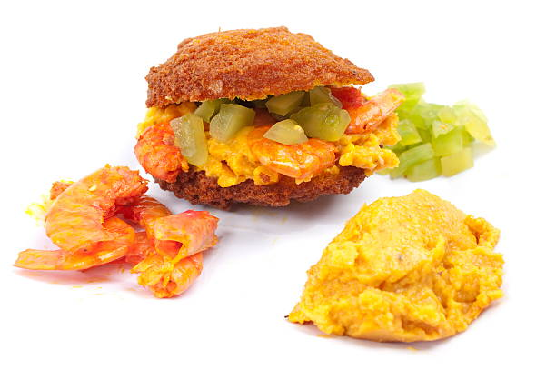
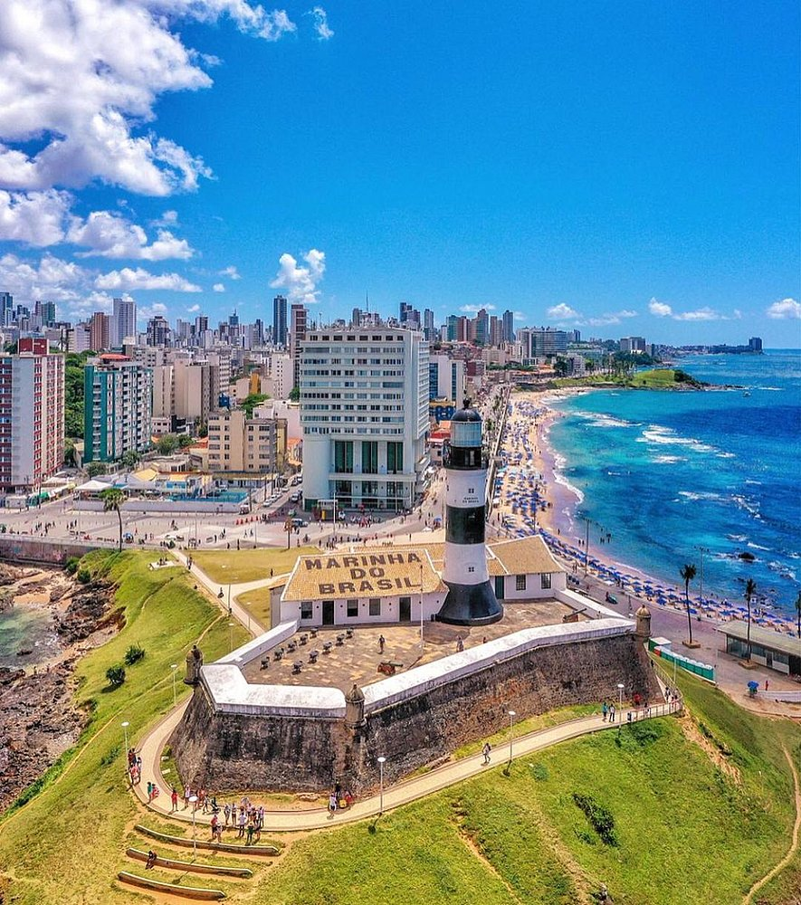
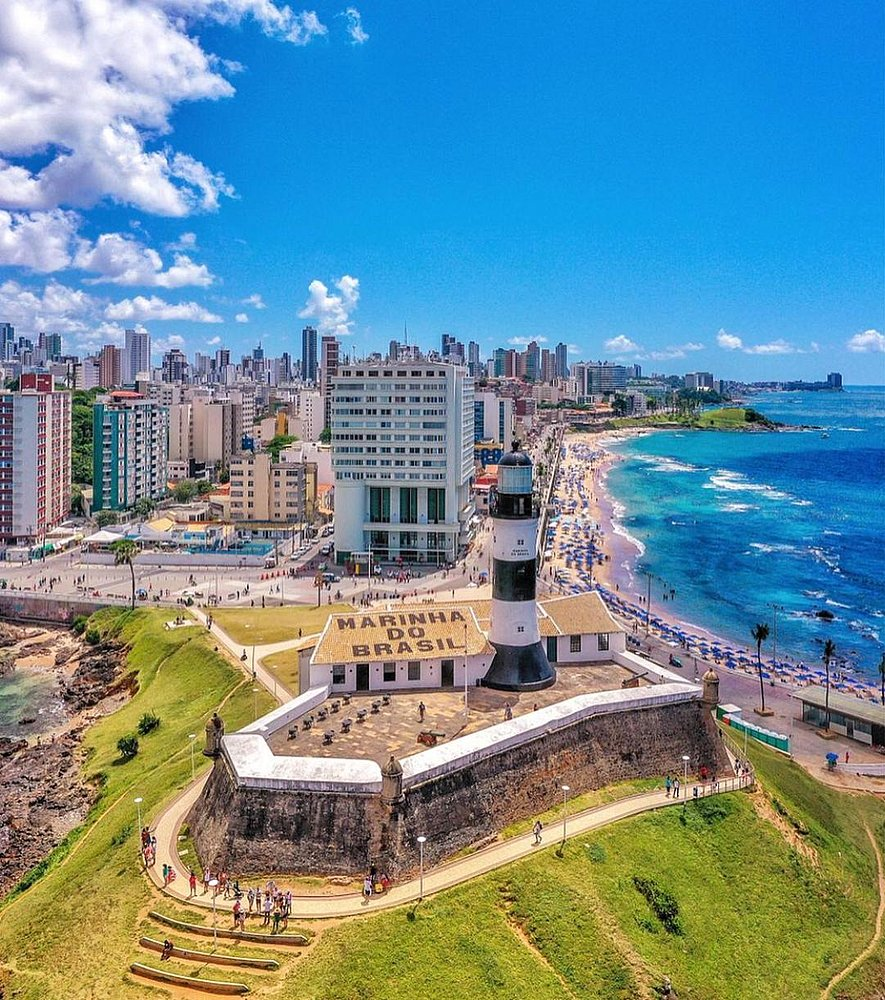
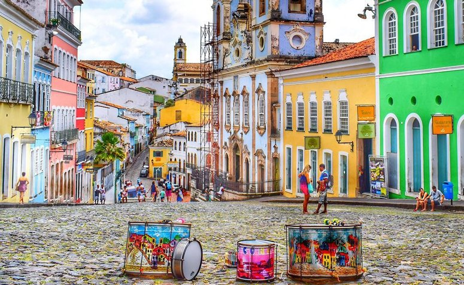
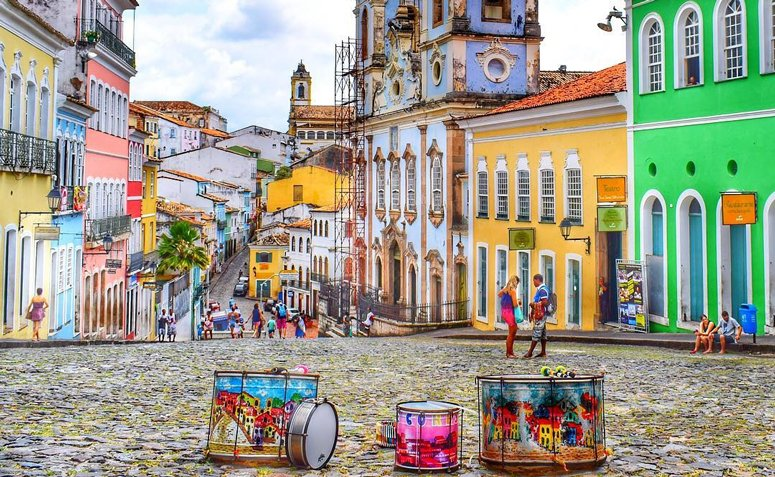

literatura
Venha conhecer uma verdadeira fábrica de escritores, um berço cultural. Jorge Amado foi um escritor brasileiro,nascido em Itabuna, Bahia ele foi um dos maiores representantes da ficção regionalista que marcou o Segundo Tempo Modernista. Sua obra é baseada na exposição e análise realista dos cenários rurais e urbanos da Bahia.

culinaria
Venha conhecer nossa culinária onde suas principais características são os temperos e sabores fortes que são uma delícia, e provar o tão famoso acarajé baiano, uma comida caracteristica da Bahia.

Música
Venha conhecer o lugar onde Caetano Veloso, um dos criadores do Movimento Tropicalista no Brasil, sendo um dos músicos mais influentes do país nasceu.
 

 
